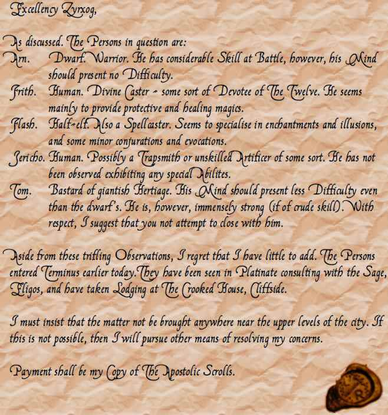

Week 18 - Zyrxog and his strange family. And yet more breadcrumbs.
Hi everyone! Back from christmas break. It's good to have a break, but even better to be back continuing wih the campaign.
As expected, an enormous session this week. As in "Say, what time is it?", "Quarter past twelve", "Oh. That explains it." A five-hour session is good going. Andrew in particular was badly faded, hustling us out of his home as soon as we were done. But it's all good. We finished the module.
Kudos to Steve/Tom, who took out the bad guy with the help of some buffs and more than a little luck. Commiserations to Andrew/Flash, who spent most of the final encounter stunned. And to Chris/Arn, who was not present but if he were would have spent the session sidelined with Andrew.
The rest of this description is kindly porvided by Steve (Tom's alter-ego), with the occasional comment from me.
Oops. Forgot to mention the glowing glyph n the floor on game night. Ah well.
The party moved on through the cave system with the sneaky rogue Jericho in the lead concentrating more on being quiet than being careful he set of a an arcane trap that exploded with a shower of acid but being fleet of foot Jericho dodged the blast.Jericho discovered the well crafted door in the cavern wall was barred from the other side, but that presented little problem for Flash who knew a little trick called 'knock'. With a clang the way was unbarred and the party thinking this was the big battle buffed up with Protection from Evil spells.
I have ruled that Tom may carry 6 rocks of suitable flinging size as standard equipment. Suitable flinging size for a half-ogre war hulk is pretty big.
Onward once again Jericho proceeded past the cracked brain into a well crafted alien hallway, the walls were decorated with a repeating tentacle pattern fascinated by the wondrous architecture Jericho thought he'd examine further when he spotted an opening in the hallway which appeared to be a laboratory.
At this point the spell casters began to whine about their lack of spells and how they should tactically withdraw and rest, but the fighters knew it was because Matlock and Murder She Wrote were playing back to back on the tavern cable. After a light supper and a comfy bed the party made their way back to the mind flayers lair not concerned with the possibility that their foe could rearmed traps, call reinforcements or had moved to extradition-free Xen'drik. Knowing that their expectant adversary was dying to monologue before the final battle our heroes prepared again.
Now, Zyrxog will not leave his complex ... but I had to do something about this. Otherwise it can get silly - the party leaving and healing up after each battle. So in the interregnum, I had Zyrxog go off for a bit and find a couple of more minions for the final battle. Not Octopins - as they have to be bred - so just a couple of dolgaunts.
Floating above the pool is a humanoid form with strange rubbery purple flesh, dressed in black robes, wielding a staff of red hot metal. Its head is hairless and bulbous, with four long tentacles where its mouth should be. Inside your head you hear an alien voice. "You dare enter my sanctum! Fools. I shall finish what Telakin could not. Your weak minds will be a sumptuous feast, your terror a pleasing garnish!"
Screwed this up. The Dispel Magic would have been caught by Zyrxog's Ring of Counterspells. Also, the boys would not have been able to throw weapons while spider climbing, because you need to use your hands. Ah well. To continue ...
With awesome power the cone of mental energy rushed over our champions, Arn and Flash collapsed and consequently fell from the wall to where two dolgaunts minions guarding another door ran to take advantage. Jericho still invisible was set upon by a pair of octopins, he retreated out of their range and maneuvered himself to help the fallen comrades. Frith attempted to lure the octopins into the corridor where he could engage them manually. At this point the spider climbing and hasted Tom had scurried across the ceiling directly above the nasty tentacle face where he dive bombed the baddie and commenced to grapple with Zyrxog. Jericho hidden with Improved Invisibility eviscerated the dolgaunts who had trouble penetrating the armor of the stricken dwarf even though he was stunned. The octopins moved into the fracas and was joined by a mace wielding Frith. Tom and Zyrxog grappled furiously in mid air, the powerful mind flayer managed to retrieve a spell component but the sheer muscle of Tom was strong enough to keep the Illithid from latching on with its tentacles and firing its mind blast at him.A mind-flayer's mind blast is a cone shape. We ruled that it therefore needs to point its head in the direction the blast is to go (like dolphin sonar blast), and so was unable to direct its blast while being grappled in mid-air. The spell component was a lump of pigfat, for a Grease spell.
A few more seconds and the half ogre had the creature pinned and that was when Zyrxog felt Tom's armor spikes. Below the furious battle to save Arn from being rent was beginning to turn to the heroes advantage what appeared to be a disaster only a few rounds before now looked like a victory. As Tom squeezed the last life from Zyrxog the levitation that kept them aloft began to fail Tom activated his feather fall and touched down in the shallow pool. As Arn and Flash were shaking of the last of the mind blast effects the rest of the party mopped up the doomed octopins. Finally there was much rejoicing and the hunt for loot began. (melee types disappointed by slim pickings, but that was to be expected) A letter was found that appeared addressed to Zyrxog about an arrangement that mentioned the party and payment of something called the "Apostolic scrolls" The library was also mentioned it appeared that Zyrxog was involved in the handling of evil / cursed items and the treasure contained within the library was that very thing. The letter had a mysterious but beautifully embossed seal with a sword and the letters LR.
And so, the denouement falls to me to describe.
The party elects not to loot the museum full of cursed objects, instead returning back to their inn now that their would-be assassins were dead.
A few days later, Eligos invites them back. He is very concerned about the party's story and returns their items. However, he does not tell the party anything specific about the Age of Worms - his communication is to Allustan and his colleagues.
As the party return to the inn, the streets are bustling with posters posting posters. The Champions Games are on again! Tom is very interested, as his father was a gladiator, and brings these posters to the party's attention. The posters are large, colourful (some would say "lurid"), and embossed at the bottom with a familiar-looking seal. They now know who the mysterious L R is - Loris Raknian, director of the Champion's Games.
Well! The trail leads on, but still the question is unanswered. Telakin was retained by Zyrxog, and Zyrgog by this Raknian dude ... but why the heck is he after them? And what about the worms. Stay tuned! All may or may not be revealed!